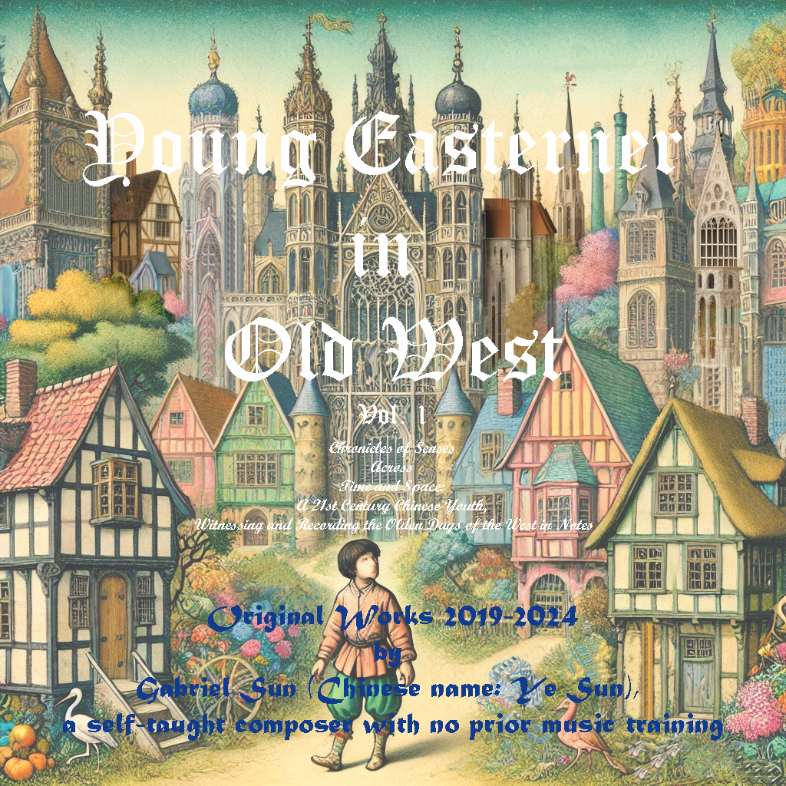
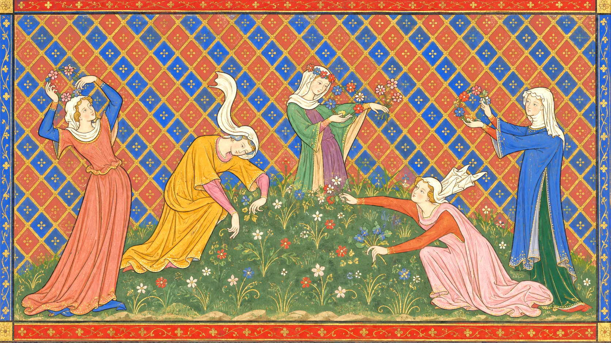
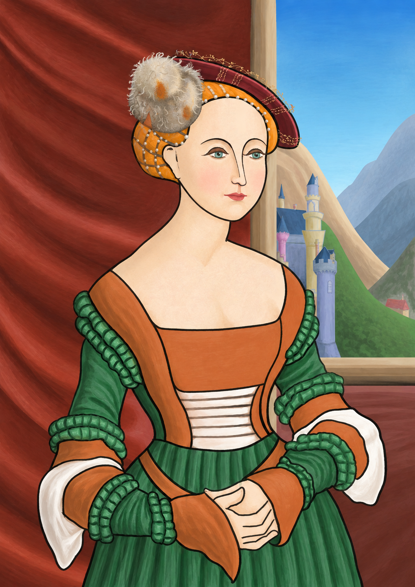
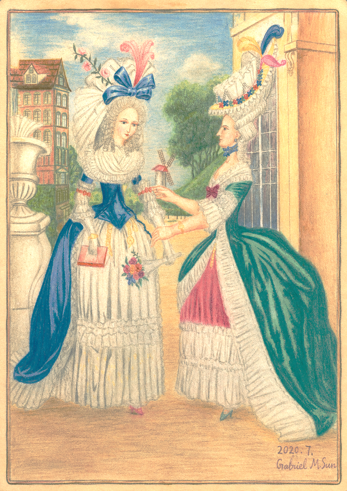
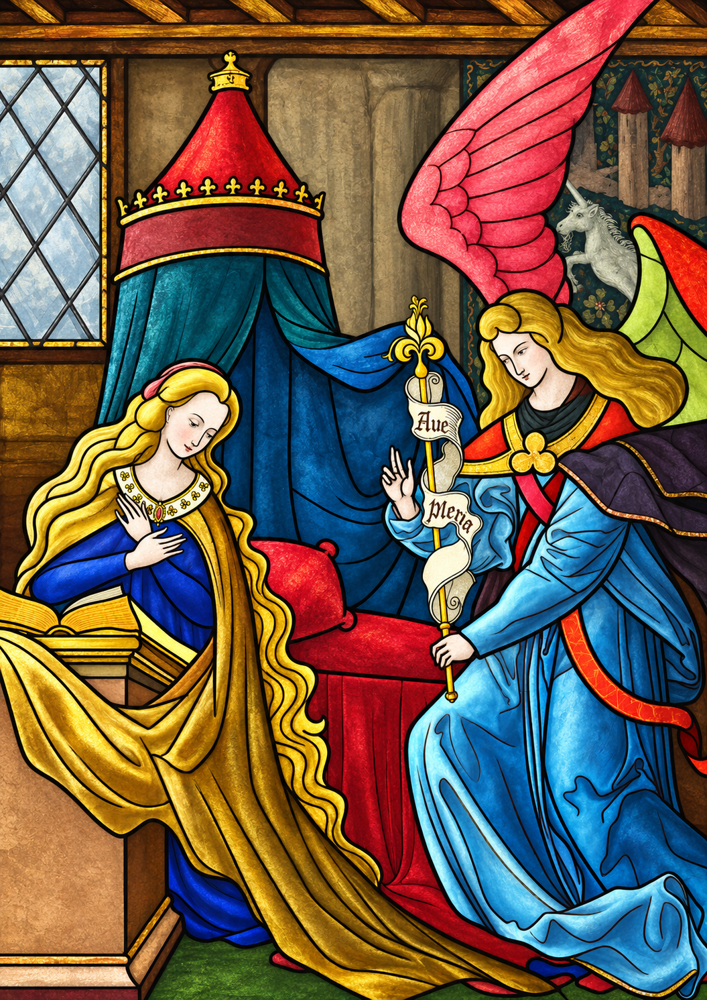
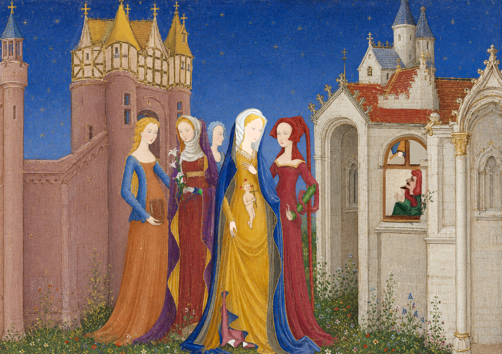

Original composition · Early music · 2019–2024
Young Easterner
in Old West
An imagined history told through early music, visual memory, and the strange distance between an Eastern self and an old Western world.

The album cover was created using a collage of AI-generated images and a small selection of personal artwork.
Listen / 01
Let the image begin to move.
Direct Spotify playback for a live-recorded meeting of Baroque harp, reconstructed instruments, and imagined landscapes.
A mixed-media score
Sound is never separate from the picture.
My music and visual art always run in parallel. When I become immersed in a particular image, the sounds of that era often appear beside it in my mind.
You are also warmly invited to enjoy my demo works, created through a combination of hand drawing and digital techniques. This page lets those two practices drift into one another: images arrive as fragments, then the music gives them duration.
Image / sound / memory
Five images, scattered like a score.
Welcome to my gallery wall. You can hover, pause, and open each image to see it in full.





Listen / 02
Cathedral echoes, kept in motion.
A second direct player for the motet and polyphonic strand of the album.
The album / 16 works
Fragments of an imagined past.
Short studies, dances, motets, carols, and journeys. The full release contains sixteen works.
01The Frosted Spring of Gailleach2:20
Play the release →02A Seafaring Bard in the Lighthouse’s Embrace3:34
03In Florence: A Wondrous Odyssey2:10
04Cathedral Echoes: A Name Unspoken / Fiery Love and Sweet Penitence1:41
05Cathedral Echoes: Flânerie Dans La Cathédrale2:26
06Cathedral Echoes: Motet du Vin1:56
07Cathedral Echoes: O Beata, Me Electa, Sponsa Gloriæ2:00
08Cathedral Echoes: Untitled Polyphonic Music1:34
09Cathedral Echoes: Untitled Motet0:57
10The Triumphe of the Goldesmyth1:39
11In Dance with the Faeries4:18
12Fair Lotus Bathed in the Morn’s Grace / Irish Sailors’ Revelry3:46
13Carol: The Seraphs’ Whispers1:42
14In the Countryside of England: A Dialogue of Mother and Child2:37
15In a Mild Midwinter, I Visited Hyperborea2:18
16Carol: The Angel’s Joyous Tidings2:50
Statement
Inheriting the spirit, composing the present.
At the age of twelve, I fell deeply in love with medieval music and began discovering lesser-known musical traditions within human civilisation. Without formal training, I approached composition through listening, personal analysis, and the imaginative act of placing myself inside another time.
I began to wonder whether the revival of early music could be extended through present-day independent creation: not a reconstruction frozen in the past, but an “early music” of our time. This album is my attempt to find a balance between inheritance and innovation.
Many of the pieces are built from fully notated ideas and simulated period timbres. I adjusted presets and post-production details to approach instruments such as the lute, portative organ, cittern, viola da gamba, Gothic harp, Welsh baroque harp, traverso, hurdy-gurdy, psaltery, and crumhorn.
— Gabriel Ye Sun
Watch / My Grimstock
A dance leaves the page.
My Interpretation of Grimstock.